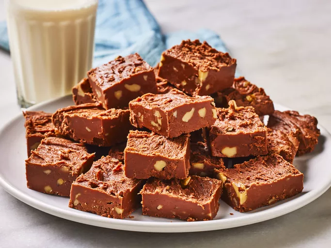

Fantasy Fudge
Home Page

Description
This fantasy fudge recipe is straight from the label of a well-known brand of marshmallow creme.
After some time, the company changed the recipe, but this is the original way to make smooth chocolate
and marshmallow fudge with walnuts. This big-batch recipe makes 3 pounds of sweet fudge—perfect for
gifting to friends and family during the holidays.
Ingredients
- 3 cups white sugare
- 3/4 cup butter
- 2/3 cup evaporated milk
- 1 (12-ounce) bag semisweet chocolate chips
- 1 (7-ounce) jar marshmallow creme
- 1 cup chopped walnuts
- 1 teaspoon vanilla extract
Steps
- Gather ingredients
- Grease a 9x13 inch pan
-
Mix sugar, butter, and evaporated milk in a large, heavy saucepan over medium heat,
stirring to dissolve sugar.
Bring mixture to a full boil and cook for 5 minutes, stirring
constantly, until mixture is slightly thickened.
-
Remove from the heat and add chocolate chips; stir until chocolate chips are melted and mixture
is thoroughly combined.
- Stir in marshmallow creme until incorporated. Mix in walnuts and vanilla.
- Transfer fudge to the prepared pan and use an offset spatula to spread out evenly and flatten.
- Let cool for at least 1 hour before cutting into squares. Enjoy!